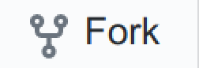
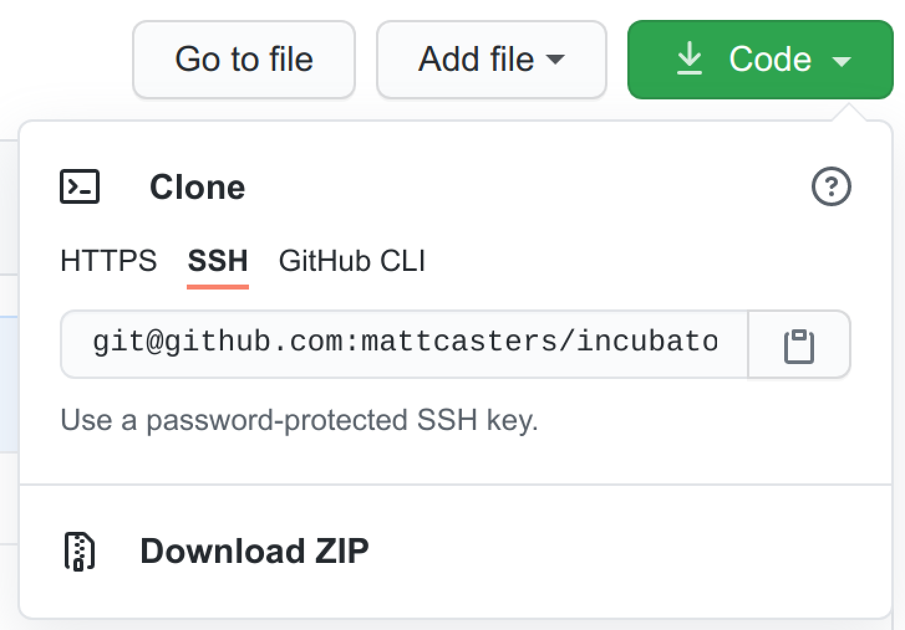
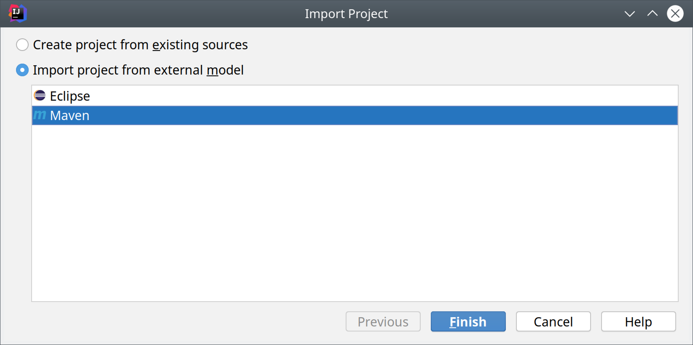
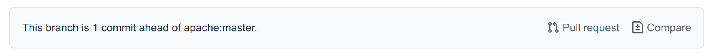
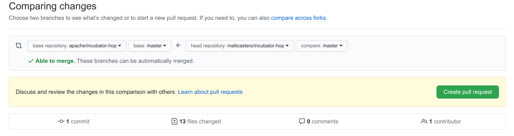
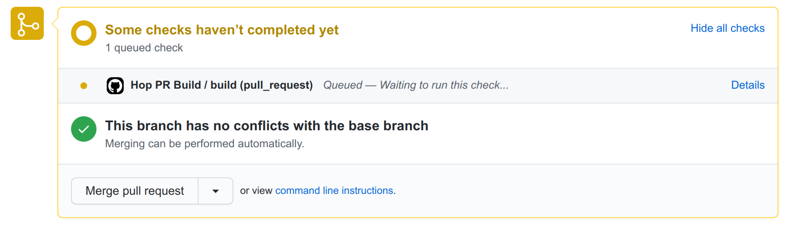

Setting up your development environment
Introduction
Thank you for wanting to help out with the development of Apache Hop. We really value your help. We assume you’re going to be using the IntelliJ IDEA integrated development environment.
Fork Apache Hop!
If you visit the Apache Hop code on github you’ll notice a Fork icon on the top right of the page:

Use this button to create a copy of the complete Hop codebase. You can then work on this fork in all safety. We call this new fork "origin" and the master copy of the Hop codebase "upstream" from your point of view.
Clone it
Now that you have your own fork it’s time to clone it onto your work computer. We’re going to assume you set up github security with proper keys and so on. To get the URL of your fork you can use the copy button on this GitHub page:

You can now run a command like this:
git clone git@github.com:YourAccount/hop.gitOnce it’s done you’ll have a new hop
Import the project
In IDEA you can use menu :
File / New / Project from existing sources…
This will ask you to navigate to our new hop
Then you need to choose to import the project from external model "Maven":

Alternatively, you can develop remotely with IDEA and gitpod.io. You’ll need JetBrains Gateway with the Gitpod plugin as explained here. Gitpod will open your project in a web-based VS Code by default. After you change your proferences to IntelliJ, your browser will launch the remote development environment.
Once you’ve started a gitpod workspace for your Apache Hop fork, all build operations etc work just like they would in your local development environment.
The Hop gitpod configuration comes with a desktop that can be used to run Hop Gui and test your work. Your desktop can be accessed by prefixing your workspace’s url with 6080, e.g. https://6080-your-gitpod-url.gitpod.io.
The default permissions in the Github-Githop integration are quite restrictive. You’ll need to allow yourself to write to your (public) repository before you will be able to push your changes.
Building the project
To build your fork you can use Maven.
Run the following command to build Hop and run all unit tests:
mvn clean installPlease make sure all the files you added or changed have the proper license header. You can run the following command to verify this:
mvn apache-rat:checkIMPORTANT: At the very least make sure to run the above 2 commands before generating a pull request against the "upstream" Hop source code.
Tip : to run Maven quicker in parallel and by skipping the unit tests you can use the following command:
mvn -T4 -DskipTests=true clean installReplace 4 by the number of threads you can spend on your computer.
Code formatting
Beyond following the obvious best practices of coding Java it’s important to note that we are using a code formatter called google-java-format
To install it in IntelliJ IDEA:
-
Go to File → Settings → Plugins.
-
Activate the Marketplace tab.
-
Search for the plugin google-java-format by Google.
-
Install it.
-
Restart IntelliJ IDEA.
All code which gets accepted into Hop is re-formatted with google-java-format via the pull request validation system.
Copyright
Please consider setting up an APL copyright header. In Idea this is done like this: File / Settings… / Editor - Copyright
Create a new copyright profile called "APL" with the following content:
Licensed to the Apache Software Foundation (ASF) under one or more
contributor license agreements. See the NOTICE file distributed with
this work for additional information regarding copyright ownership.
The ASF licenses this file to You under the Apache License, Version 2.0
(the "License"); you may not use this file except in compliance with
the License. You may obtain a copy of the License at
http://www.apache.org/licenses/LICENSE-2.0
Unless required by applicable law or agreed to in writing, software
distributed under the License is distributed on an "AS IS" BASIS,
WITHOUT WARRANTIES OR CONDITIONS OF ANY KIND, either express or implied.
See the License for the specific language governing permissions and
limitations under the License.Set this as the default copyright profile for all files.
If you want to create samples for the Apache Hop project, to be included in the source code, you can set variable HOP_LICENSE_HEADER_FILE in your environment(s) and point it to a file containing the license above. It will automatically insert the license header in your .hpl and .hwf files.
Run Apache Hop
After a successful build, the Hop UI can be started.
$ cd assemblies/client/target $ unzip hop-client-*.zip $ cd hop
On Windows, run hop-gui.bat, on Mac and Linux, run hop-gui.sh
Debugging on linux
To debug the Hop GUI or a long running pipeline or workflow you can change the launch scripts and uncomment the line with the 5005 port in it:
# optional line for attaching a debugger
#
HOP_OPTIONS="${HOP_OPTIONS} -Xdebug -Xnoagent -Djava.compiler=NONE -Xrunjdwp:transport=dt_socket,server=y,suspend=n,address=5005"Debugging on Windows
To debug the Hop GUI you should run hop-gui.bat DEBUG passing DEBUG as parameter
Attach debug process on IntelliJ
On IntelliJ you can now start a remote debugging session using the menu:
Run — Attach to process…
You can now set breakpoints in your code and see what’s going on.
Committing work
Updating your fork can be done simply by committing locally and then pushing those changes to "origin". Make sure to always reference a #12345 GitHub issue! For example:
git commit -m "#12345 : My work description" .Updating your fork
After a while it’s likely your "origin" fork will be lagging behind with the main "upstream" Hop codebase.
You can develop against the mainmainmain
To update it you can add "upstream" to your local configuration:
git remote add upstream git@github.com:apache/hop.gitThen you can fetch all the changes from "upstream":
git fetch upstream mainWe now want to catch up by pulling all the changes from "upstream" and by doing a rebase at the same time.
git pull --rebase upstream mainNow of-course we want to update our "origin" fork as well:
git push --force-with-lease origin mainGenerating a pull request
Changes to the Hop codebase are done through Pull Requests. They’ll be built, compiled, tested and reviewed.
On the github page of your "origin" fork you’ll now see something like the following:

You can now choose to create the Pull Request using the shown button.
If all goes well you should see something like the following:

After you hit the green "Create pull request" button you will be presented with the opportunity to describe the changes. Make sure to reference the right GitHub Issue and leave useful tips for the reviewers of the changes. Again: as mentioned above please make sure your project builds and all tests succeed.
Once you created the pull request we will run all sorts of tests and this will take some time. You can check the pull request to see how it’s doing:

If the pull request doesn’t build you can look at the details and fix it easily by simply pushing another commit to your "origin" fork. It will be automatically added to the pull request and it will re-run the build and tests.
Evaluating a pull request
If you want to review someone else’s pull request you can check out a pull request in a different branch. Before you do this, commit or stash all the changes you’re making yourself in the branch you’re currently using.
Then fetch the pull request changes themselves, with 1234pr1234
git fetch upstream pull/1234/head:pr1234Now we can check out this branch:
git checkout pr1234You now have the state of the source code in the pull request and you can build and test the project.